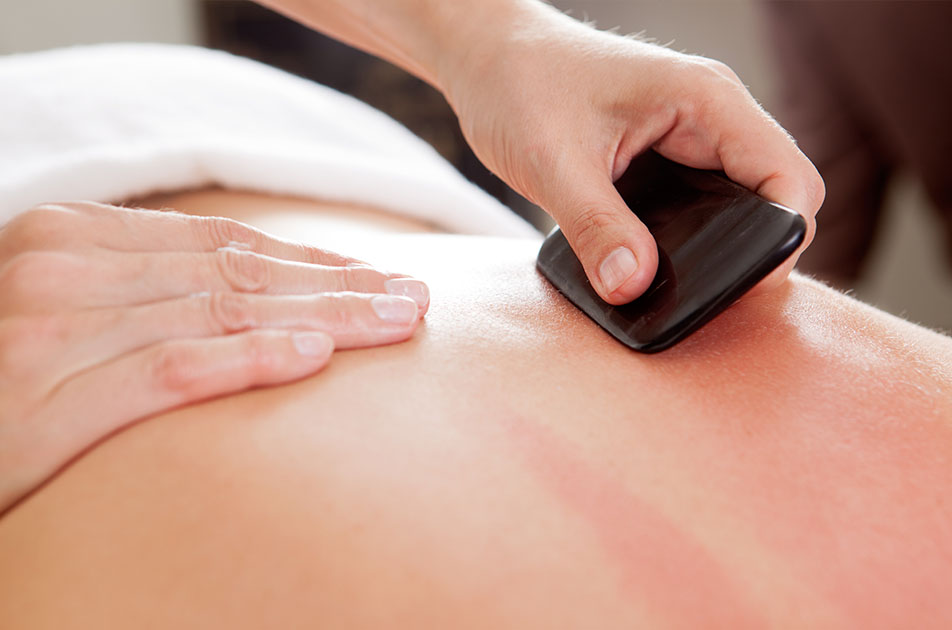

WHY TOTAL BALANCE?
FOR WHOM?
WHEN?
Adriana Perez L.A. c. MS
Adriana Perez has always been dedicated to a holistic approach to healing. Growing up in Medellin, Colombia. Adriana witnessed her grandmother, the town's healer, use herbs, teas and other alternative methods to cure ailments.
Inspired by her grandmother, upon graduating from High School in Colombia, Adriana moved back to Miami to learn traditional ways of healing. In 2002 she obtained a medical assistant degree from Miami Dade Community College. In 2001, she received certification as a Phlebotomy Technician, and was planning to become a registered nurse.
Adriana, however, postponed nursing school when a family member faced serious health issues and needed her care. It was during this time that Adriana felt disillusioned with traditional eastern medicine and doctors. While she acknowledge that traditional medicine was necessary to cure serious illnesses, she felt that the medical professionals responsible for the treatment had offered very little hope. Once dismissed by the hospital, Adriana and her family looked for alternative options to treat the many side effects the strong medicine that had been administered had caused.
It was at this time that Adriana felt compelled to seek a career path that would allow her to heal those in need in a comprehensive and holistic manner. She enrolled in a massage therapy program where she explored the human body and its healing properties. She further her training in homeopathic, oriental medicine, and nutrition. In 2008 she obtained a Masters in Oriental Medicine from the Acupuncture Massage College.
One of Adriana's objectives has always been to bring this alternative approach medicine to all. As a result she has instituted community acupuncture in her practice for those whose financial situations would otherwise be an obstacle to obtaining this highly specialized degree of care.
Adriana is a licensed acupuncturist in the State of Florida and is certified by the National Certification Commission for Acupuncture and Oriental Medicine.
She is also a licensed skin care specialist in Florida, a Reiki master and a certified hypnotist. She incorporates all aspects of her training and background to the treatment of her patients. The most important factor for her is empowering the patient to realize that they have the necessary healing power within themselves, and that their treatment goals can be realized through education and lifestyle changes.
-
ACUPUNCTURE
Aliquam erat ac ipsum. Integer aliquam purus. Quisque lorem tortor fringilla sed.
Acupuncture generally involves several weekly or fortnightly treatments. Most courses consist of up to 12 sessions. Your first visit will involve an exam and an assessment of your condition, the insertion of needles, and advice on self-care. Most sessions last about 30 minutes. The patient will be asked to lie down, either face-up, face-down or on his/her side, depending on where the needless are inserted. As each needle is inserted the patient should feel them, but initially without pain. However, when the needle reaches the right depth there should be a deep aching sensation. Quisque lorem tortor.Quisque lorem tortor.
BENEFITS
- Vulputate cursus a sit amet mauris.
- Convallis ac, laoreet enim.
- Quisque cursus et, porttitor risus.
-
CHINESE HERBS
Aliquam erat ac ipsum. Integer aliquam purus. Quisque lorem tortor fringilla sed.
Acupuncture generally involves several weekly or fortnightly treatments. Most courses consist of up to 12 sessions. Your first visit will involve an exam and an assessment of your condition, the insertion of needles, and advice on self-care. Most sessions last about 30 minutes. The patient will be asked to lie down, either face-up, face-down or on his/her side, depending on where the needless are inserted. As each needle is inserted the patient should feel them, but initially without pain. However, when the needle reaches the right depth there should be a deep aching sensation. Quisque lorem tortor.Quisque lorem tortor.
BENEFITS
- Vulputate cursus a sit amet mauris.
- Convallis ac, laoreet enim.
- Quisque cursus et, porttitor risus.
-
CUPPING
Aliquam erat ac ipsum. Integer aliquam purus. Quisque lorem tortor fringilla sed.
Acupuncture generally involves several weekly or fortnightly treatments. Most courses consist of up to 12 sessions. Your first visit will involve an exam and an assessment of your condition, the insertion of needles, and advice on self-care. Most sessions last about 30 minutes. The patient will be asked to lie down, either face-up, face-down or on his/her side, depending on where the needless are inserted. As each needle is inserted the patient should feel them, but initially without pain. However, when the needle reaches the right depth there should be a deep aching sensation. Quisque lorem tortor.Quisque lorem tortor.
BENEFITS
- Vulputate cursus a sit amet mauris.
- Convallis ac, laoreet enim.
- Quisque cursus et, porttitor risus.
-

GUA SHA
Aliquam erat ac ipsum. Integer aliquam purus. Quisque lorem tortor fringilla sed.
Acupuncture generally involves several weekly or fortnightly treatments. Most courses consist of up to 12 sessions. Your first visit will involve an exam and an assessment of your condition, the insertion of needles, and advice on self-care. Most sessions last about 30 minutes. The patient will be asked to lie down, either face-up, face-down or on his/her side, depending on where the needless are inserted. As each needle is inserted the patient should feel them, but initially without pain. However, when the needle reaches the right depth there should be a deep aching sensation. Quisque lorem tortor.Quisque lorem tortor.
BENEFITS
- Vulputate cursus a sit amet mauris.
- Convallis ac, laoreet enim.
- Quisque cursus et, porttitor risus.
TESTIMONIES
Proin condimentum fermentum nunc. Etiam pharetra, erat sed fermentum feugiat, velit mauris egestas quam
"Adriana is a professional in every sense of the word. She takes the time to get to know each and every one of her patients and provides them with the attention that they need. I have been seeing Adriana for over one year now and am continuously amazed at the great work that she does. From relieving stress to back pain & other ailments, Adriana is FANTASTIC! Thanks for all that you do!"
Karina Lopez
North Miami, Fl
"Adriana is a professional in every sense of the word. She takes the time to get to know each and every one of her patients and provides them with the attention that they need. I have been seeing Adriana for over one year now and am continuously amazed at the great work that she does. From relieving stress to back pain & other ailments, Adriana is FANTASTIC! Thanks for all that you do!"
Karina Lopez
North Miami, Fl
"Adriana is a professional in every sense of the word. She takes the time to get to know each and every one of her patients and provides them with the attention that they need. I have been seeing Adriana for over one year now and am continuously amazed at the great work that she does. From relieving stress to back pain & other ailments, Adriana is FANTASTIC! Thanks for all that you do!"
Karina Lopez
North Miami, Fl
ANY QUESTIONS ABOUT OUR SERVICES?
Call us at +1 (786) 502 8283
E-mail us at youremail@gmail.com
or
Visit us at 330 SW 27 Ave. Suite #405
Miami, Fl 33135
©2017 Total Balance Health Care.